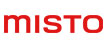
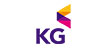
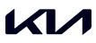
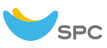
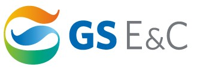
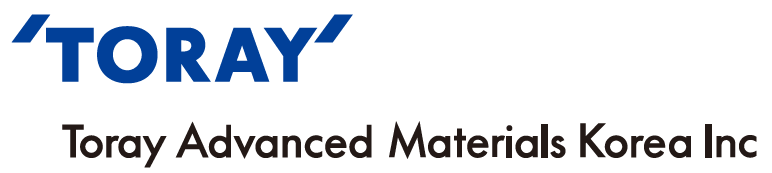
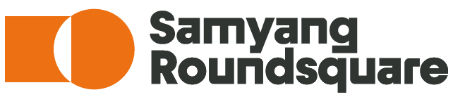
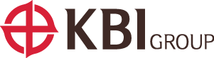

in Story & News
Member Companies
Headline
Misto Holdings
FILA Holdings Announces Name Change to Misto Holdings
FILA Holdings announced that its shareholders approved the decision to change the company name to Misto Holdings during the general meeting held on March 31. This name change marks a significant milestone in the company’s journey to solidify its identity as a global brand portfolio company, expanding beyond the limitations of a single brand image. Despite the name change, all brands under Misto Holdings, including FILA, will continue to operate independently, maintaining their unique identities.
The new name Misto, derived from the Italian word for "harmony," "blend," or "diversity," reflects the company’s commitment to connecting diverse possibilities and driving creative change.
In conjunction with the name change, Misto Holdings has developed a new corporate color and logo, and introduced four core values: Synergetic, Empowering, Resilient, and Responsible. As captured in its slogan "Redefining Boundaries,” the company’s new corporate identity is focused on generating synergies among its brands and embracing all possibilities across its portfolio.
Misto Holdings has also launched a newly revamped official website. To ensure effective communication with existing customers, updates and relevant information will be provided through various channels.
KG Group
KG Group Celebrates 40th Anniversary, Pledges Leap Toward the Next 100 Years
KG Group held a commemorative ceremony on August 30 at COEX in Samseong-dong, Seoul to mark its 40th anniversary. The event, held just ahead of the company’s founding day on September 1, was a meaningful occasion to reflect on four decades of challenge and growth, while reaffirming its commitment to a sustainable future over the next 100 years.
Held under the slogan “40 Years Together, 100 More to Come”, the ceremony brought together approximately 1,500 employees and their families. Attendees celebrated the spirit of KG’s founding and shared the company’s commitments to social contribution, ESG initiatives, and long-term vision. As part of the event, the Sunhyun Foundation scholarship ceremony awarded grants to 27 individuals, including future talents selected from across the country and heroic firefighters. To date, more than 1,000 students have received support through the Sunhyun scholarship program, with cumulative funding reaching KRW 1.8 billion. The program has become a key representation of KG’s ESG efforts and ongoing commitment to social contribution.
The 40th anniversary celebration went beyond a conventional ceremony. It served as a platform to showcase KG’s history and philosophy, its sense of social responsibility, engagement with arts and culture, and its close relationship with employees. The event featured a scholarship presentation, performances by an employee choir and orchestra, and a special segment recognizing the company’s first-ever employee. Through these elements, the event delivered a message of trust and solidarity as KG advances toward the next century.
KG Group plans to go beyond enhancing competitiveness in its core industries such as automotive, steel, and chemicals. The company is also committed to making a positive impact in education, culture, and the environment, realizing its vision of becoming a “respected company that everyone is proud of.”
Kia
Kia Launches the Harmonium Education Program for Multicultural Youth
In April 2025, Kia officially launched the Harmonium Education Program to support the self-reliance and stable social integration of multicultural youth. The program name, Harmonium, is a blend of the words “harmony” and “umteuda” (a Korean word meaning “to sprout”), symbolizing a society where the next generation coming from diverse cultural backgrounds can grow and thrive together in harmony.
The program focuses on four specialized fields: IT, F&B, video editing, and landscaping. It offers practical education and hands-on training to assist in career planning, as well as internship opportunities through partnerships with outstanding social ventures and start-ups, Kia plans to provide ongoing support to help multicultural youth take charge of their career paths, strengthen their job and entrepreneurship competencies, and grow into empowered members of society.
SPC Group
SPC Group Donates KRW 130 Million in Gift Certificates to 2,600 Sanitation Workers
On July 29, SPC Group donated SPC gift certificates worth KRW 130 million to 2,600 sanitation workers in appreciation of their dedication to maintaining a clean and pleasant urban environment during the summer heat. The gift certificates were officially presented to Seong-jun Ju, Chairman of the Seoul City Hall Labor Union, during a ceremony of appreciation held at the union office in Seongdong-gu, Seoul. The certificates can be used freely at more than 6,600 SPC-affiliated stores across the country, including Paris Baguette, Baskin Robbins, Dunkin’, and Pascucci.
Se-ho Do, CEO of SPC Group, stated, “We are deeply grateful to the dedication of the sanitation workers, who have worked tirelessly despite the relentless heat. SPC will continue to support the unsung heroes of our society who serve behind the scenes.”
GS E&C
GS E&C’s Xi Lab Wins Red Dot Design Award 2025
GS E&C’s Xi Lab, an experiential space showcasing future residential technologies inside the House Xi brand gallery, has been named a winner in the Brands & Communication Design category at the 2025 Red Dot Design Awards, one of the world’s top three design competitions. Xi Lab was designed to offer customers a firsthand experience of Xi’s forward-looking residential philosophy. Through this space, GS E&C has implemented calming technologies or Calm Tech provide precise control over sound, air, and light, delivering a comfortable and emotionally engaging living environment where residents can fully be themselves.
Earlier this year in March, GS E&C also received two awards at the iF Design Award 2025, another prestigious international design competition held in Germany. These recognitions reflect the growing global acknowledgment of the Xi brand’s enhanced competitiveness in brand and design following its recent rebranding.
Toray Advanced Materials Korea
Toray Advanced Materials Korea Hosts Military Experience Program and Donates KRW 10 Million to Sister Unit
Toray Advanced Materials Korea held a one-night, two-day military experience program from August 5 to 6 in partnership with its sister unit, the 5th Artillery Brigade. The event was attended by approximately 40 participants, including employees and their elementary school-aged children. On the first day, participants tour experience included seeing various combat equipment, including firearms, self-propelled artillery, and military supplies, and the barracks. On the second day, the group visited peace-related sites in the DMZ, including the Third Tunnel, the Peace Observatory, and the Cheorwon History and Culture Park, reflecting on the importance of national security and peace. In addition to this program, Toray Advanced Materials Korea extended a KRW 10 million development fund to the unit, following a prior donation in April, to help boost morale and improve welfare among the soldiers. Employees who took part in the experience noted that it was a valuable opportunity to better appreciate the importance of national defense and allow their children a glimpse at military life. They also expressed gratitude toward the service members dedicated to protecting the country.
Samyang Roundsquare
Buldak Sauce Partners with Panda Express in Strategic U.S. Collaboration
Samyang Foods’ Buldak brand is teaming up with Panda Express, the largest Asian dining concept in the United States, to make a bold entry into the global foodservice market. Leveraging Buldak Sauce’s strong brand recognition in the United States, the partnership marks a major step in Samyang’s global expansion.
The collaboration has resulted in a new limited-time menu item, Dynamite Sweet & Sour Chicken. The dish features crispy battered chicken stir-fried in a wok with red bell peppers and onions, then finished with Samyang’s signature Buldak Sauce. It is considered the spiciest dish ever released by Panda Express. Dynamite Sweet & Sour Chicken will be available through October 7 at select Panda Express locations across 10 cities in the United States.
With this partnership, Samyang Foods aims to accelerate its global growth strategy, targeting spice lovers not only in North America but also across international markets.
KBI Group
KBI Group Donates KRW 10 Million in Scholarships to Foster Talent in Gumi
KBI Group, a company specializing in electric wire, copper materials, and auto parts, has once again extended scholarships to the city of Gumi, following a similar contribution in December 2024.
On August 20, KBI Group Vice Chairman Han-sang Park visited Gumi City Hall to meet with Mayor Jang-ho Kim and representatives of the scholarship foundation. During the visit, Vice Chairman Park extended KRW 10 million in scholarships, prepared by KBI Kukin Industries, to the Gumi City Scholarship Foundation aimed at supporting students from large families and vulnerable groups.
Vice Chairman Park stated, “It is a pleasure to contribute to Gumi’s efforts in nurturing future leaders who will grow into towering figures over the next century. I hope this support will help advance local education and broaden learning opportunities for underprivileged students.”